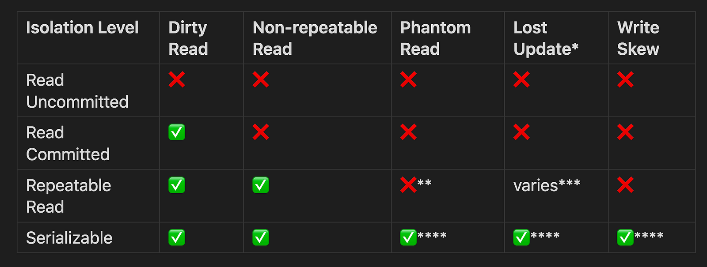

How many times have you tried to get your head around and memorize transaction isolation levels? It’s a topic that would pop up in almost every single book on DBs or architecture. Are you able to replay and describe those levels at any random moment? Good for you if you can, but for many people it’s a topic one would rehearse before system design interviews or when faced with a peculiar problem that directly relates to it (once in a lifetime probably if ever). Worst case scenario, engineers would drill it together with a billion of buzzwords and acronyms just for the sake of being ready to answer interview questions (superficially) or hold a conversation about DBs. But in fact, neglecting to understand the underlying mechanisms behind actual transactions and corresponding concurrency problems (sometimes called anomalies) can lead to serious problem in production code.
The Recipe: Build Understanding from the Ground Up
So I have a recipe. Instead of trying to memorize the isolation levels and what problems they solve, let’s build the understanding from the ground up. We’ll briefly talk about how transactions work in modern RDBMSs, which will help us understand how it results in those anomalies and finally build the understanding of what guarantees are provided by different isolation levels.
This approach works because when you understand the why behind each isolation level, the what becomes obvious. You’ll naturally remember that Read Committed prevents dirty reads because you understand what dirty reads are and why they’re problematic. No more cramming tables of check marks and X’s.
The Central Tension: Serial Execution vs Performance
What Transactions Promise
I’ll assume the reader has some basic understanding of what transactions are and that they separate groups of commands into atomic, consistent, isolated and durable (ACID) chunks that execute against user data.
What’s important about transactions in this context is that when a developer begins a transaction, they expect serial execution guarantees. The most straightforward approach to provide such guarantees would be to indeed enforce serial execution: no transactions would overlap in time (if transaction A is in progress, the DB would wait for it to finish before allowing any other operations to proceed).
The Reality: Performance Demands Compromise
Some DBs indeed implement such isolation level and call it SERIALIZABLE, like PostgreSQL, SQL Server, and CockroachDB, however some DBs consider it too ineffective and do something else under its name (Oracle implements Snapshot Isolation instead of true Serializable). So, as mentioned, it would be too slow to enforce each transaction to be serially executed in the DB (one but not the only reason is that transactions can be long running). That’s the reason why modern DBs allow executing transactions in parallel to radically improve performance at the expense of occasionally producing visibility issues.
This tension between correctness and performance is what creates our isolation levels — each one represents a different point on the spectrum of “how much correctness am I willing to trade for speed?”
Quick Reference: Isolation Levels and Anomaly Prevention
Before we dive into each level, here’s a reference table you can refer back to as we go through the details:

* Lost Update prevention varies by database implementation
** Some databases like PostgreSQL prevent phantom reads even at Repeatable Read
*** PostgreSQL allows Lost Updates at Repeatable Read, MySQL prevents them
**** Oracle’s “SERIALIZABLE” doesn’t prevent Write Skew; some NoSQL databases don’t offer true SERIALIZABLE at all
The Progressive Journey Through Isolation Levels
Read Uncommitted: Maximum Speed, Minimum Safety
The Goal: Get maximum performance by ditching any isolation guarantees.
The Solution: Obviously, if we ditch any isolation, then we’ll have zero transaction overhead. Transactions will always see any changes made by other transactions regardless if they were committed or rolled back, and the order of seeing values is not guaranteed.
The Trade-off: Dirty Reads — reading data that might be rolled back. This means you might base business decisions on data that never actually existed in a committed state.
Real Example: In reality, there are many use cases where it’s acceptable: for example, some metrics that are expected to be approximate or fluid, such as likes count in social networks, or real time visitor count, etc.
Implementation Notes: Not all DBs even support this; PostgreSQL officially supports it but treats it the same as Read Committed in practice.
Read Committed: Hide Uncommitted Changes
The Goal: Solve the dirty read problem while maintaining good performance.
The Solution: Hide any changes made by a transaction before it’s committed. This avoids Dirty Reads, i.e. changes that potentially might be rolled back are not visible to other transactions until these changes are committed.
There are two ways to implement this guarantee:
- Historically (like in older versions of PostgreSQL or some current configurations of MySQL/MariaDB) it was achieved by putting and releasing read and write locks on rows. Write locks are put on rows for the duration of the transaction, and read locks are put only for the duration of a read operation (to ensure it locks if a write lock is in place)
- Most modern systems use MVCC (multi version concurrency control). Each transaction starts with the snapshot of the database as of its start time, but for each operation the snapshot is refreshed: it uses the snapshot from the latest committed transaction.
The Trade-off: Non-repeatable Reads — the same query can return different values within a single transaction.
Real Example: Hotel booking: let’s say a transaction reads room_price = $100 and shows this to the customer. The customer fills out their info. Meanwhile, another transaction updates the price to $150 and commits. When our transaction completes the booking, it reads and charges the new price of $150. The customer sees they were charged $150 for a room they were quoted at $100 — they’ll rightfully complain.
Implementation Notes: This is way better than Read Uncommitted, and in fact, it’s the default isolation level in PostgreSQL. There are many use cases where Dirty Reads mentioned above are not acceptable but Non-repeatable Reads are OK. For example, in e-commerce we would want customers to see only products that were committed, or we don’t want to send an email to an address that is being changed by another transaction but might still be rolled back.
Repeatable Read: Consistent Snapshots Within Transactions
The Goal: Ensure row values would return the same value regardless of what other transactions might be committing at the same time.
The Solution: In that case, the problem of non-repeatable reads is mitigated because for the whole duration of the transaction, the same value of room price would be used. Quite logically, such isolation level is called Repeatable Read.
Again, it can be implemented in two ways:
- again, the legacy way is using locks: putting read or write locks for the duration of the transaction. This ensures that if a value is being modified, then it will be seen by other transactions only when it commits/rolls back.
- using MVCC: transactions maintain the same snapshot during the whole transaction, but they stay fixed and don’t update it for every operation like in Read Committed.
The Trade-offs: While Repeatable Read prevents dirty reads and non-repeatable reads, it still allows several anomalies:
Lost Updates: An interesting note is that PostgreSQL uses pure MVCC for this isolation level, while MySQL uses a combination of MVCC and locks. That’s why PostgreSQL allows Lost Updates (thus violating the standard), but MySQL doesn’t. That’s one example where the line between transaction isolation levels gets blurry and implementations differ from the standard.
Real Example for Lost Updates: Two people check their shared bank account at the same time and both see $1000. Person A deposits $200 (calculating $1000 + $200 = $1200) and Person B also deposits $200 (calculating $1000 + $200 = $1200). Whichever transaction completes last overwrites the first one, so the account ends up with $1200 instead of the correct $1400 — one of the $200 deposits vanished into thin air.
Note: that wouldn’t happen if the account is updated in one statement because all operations are atomic in most databases (e.g. UPDATE accounts SET balance = balance + 200 WHERE id = 1;), but if balance is read and then updated in two operations then it would be an issue.
Phantom Reads: This problem is related to range queries. If we run a query like SELECT * FROM accounts WHERE balance > 0 multiple times during the transaction, there’s neither locks nor MVCC that could help us get the same result because rows satisfying that criteria can be added or deleted by other transactions.
Write Skew: This occurs when two transactions read overlapping data sets, make decisions based on what they read, and then write to disjoint data sets, but the writes violate a constraint that should be maintained across both sets.
Real Example for Write Skew: An on-call scheduling system where there must always be at least one doctor on call. Two transactions might each read that there are currently 2 doctors on call, and each decides it’s safe for “their” doctor to go off-call, resulting in 0 doctors on call — violating the business rule.
Implementation Notes: So the solution here is to use locks (with something like SELECT FOR UPDATE to mitigate Lost Update, or lock on another special lock table or use advisory locks to mitigate Phantom Reads and Write Skew). Alternatively, we can use the strictest isolation level we’ll review below.
Serializable: The Ultimate Solution
The Goal: Ensure transactions execute as if they were run one after another in some serial order.
The Solution: As discussed above, the ultimate solution to all these anomalies is to ensure transactions execute as if they were run one after another in some serial order. This is what Serializable isolation promises — it prevents all anomalies including phantom reads, write skew, and any other consistency violations that could arise from concurrent execution.
But here’s where things get interesting and potentially confusing: not all databases that offer a “SERIALIZABLE” isolation level actually provide true serializable isolation.
True Serializable Implementations:
Modern databases implement serializable isolation in clever ways that avoid the performance penalty of actual serial execution:
- PostgreSQL (9.1+) uses Serializable Snapshot Isolation (SSI), an optimistic approach that allows transactions to proceed without blocking, but tracks dependencies between transactions. If it detects a pattern that could lead to a serialization anomaly, it aborts one of the transactions. This is remarkably efficient — often only 10–30% slower than Read Committed for typical workloads.
- SQL Server and MySQL InnoDB take a more traditional approach using range locks and next-key locks respectively. When you run
SELECT * FROM accounts WHERE balance > 1000, they lock not just existing rows but also the “gaps” between rows to prevent phantoms. This works but can cause significant blocking. - CockroachDB and FoundationDB were designed from the ground up with serializable as their primary isolation level, using distributed versions of optimistic concurrency control.
The Oracle Exception:
Here’s a critical point for the reader: Oracle’s SERIALIZABLE is not actually serializable. It implements snapshot isolation, which prevents most anomalies but can still suffer from Write Skew. We won’t get into the detail here (we refer you to this blog post for more information), but it’s important to be mindful of that fact if you’re using Oracle.
The Trade-offs:
Serializable makes sense when:
- You have complex business invariants spanning multiple rows (like the on-call doctors example)
- Correctness is more important than performance
- You want to simplify reasoning about concurrent behavior
However, it comes with costs:
- Reduced throughput (varies by implementation)
- Increased transaction aborts requiring retry logic
- Potential for false positives where transactions are aborted unnecessarily
Practical Advice: How to Get Your Head Around and Memorize Anomalies, Isolation Levels and Transactions
Here’s a mental framework to help you remember isolation levels and their trade-offs:
Start with the Problems, Not the Levels
- Dirty Read: Reading data that might be rolled back
- Non-repeatable Read: Same query returns different values within a transaction
- Phantom Read: Range queries return different row sets within a transaction
- Lost Update: Concurrent modifications overwrite each other
- Write Skew: Transactions violate constraints when writing to disjoint data sets
Then Map Problems to Solutions
- Read Uncommitted: Allows all problems (use only for approximate data)
- Read Committed: Prevents dirty reads (good default for most applications)
- Repeatable Read: Prevents dirty + non-repeatable reads (good for reports, calculations)
- Serializable: Prevents all problems (use for critical business logic)
Practical Decision Framework
- Start with Read Committed — it’s the sweet spot for most applications
- Upgrade to Repeatable Read when you need consistent calculations within a transaction
- Use Serializable only when business logic requires it and you can handle retries
- Never use Read Uncommitted unless you specifically need dirty reads for performance
Memory Aids
- Remember the hotel booking example for non-repeatable reads
- Remember the bank account example for lost updates
- Remember the doctor on-call example for write skew
- Think “more isolation = fewer anomalies = slower performance”
Most importantly, understand your database’s specific implementation. PostgreSQL’s Repeatable Read allows lost updates while MySQL’s doesn’t. Oracle’s “Serializable” isn’t actually serializable. These implementation differences matter more in production than the theoretical standard.